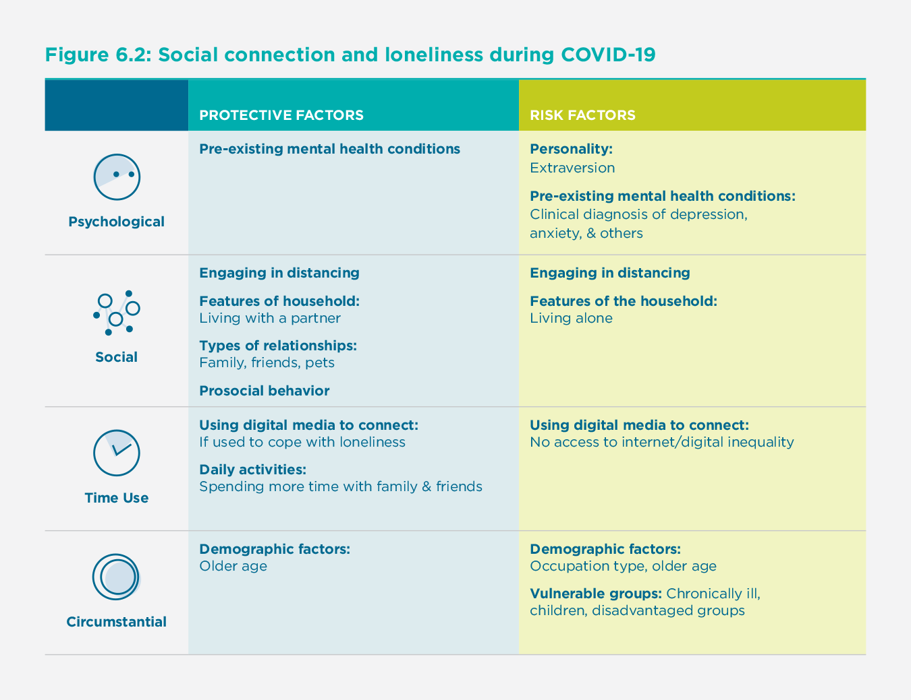

The COVID-19 pandemic has impacted life worldwide. Globally, governments have attempted to slow the spread of the disease by promoting “social distancing” guidelines, including staying at least 6 feet (2 meters) away from anyone outside one’s household.[1] Early in the implementation of social distancing, the World Health Organization (WHO) announced that the term “physical distancing” better captured the essence of the guidelines, such that people should remain physically but not socially distant from others.[2] The same recommendation was independently decided by the (World Happiness Report Editors) on the same day, at the March 20 virtual launch of World Happiness Report (WHR) 2020. Although the term “social distancing” continues to be widely used (including within peer-reviewed journals), because the topic of this chapter is about maintaining connections while distancing, we adopt the WHO and WHR recommendation to use “physical distancing.”
Physical separation curtails the spread of the virus, yet the practice of physical distancing inherently limits people’s in-person social interactions, which may narrow their sense of social connection.[3] The reduction in the physical availability of social connections is concerning, as over a century of research has proven how crucial social connection is for well-being.[4] Aware of the potential negative consequences to well-being posed by COVID-19 and its sequelae, researchers in the social, behavioral, and clinical sciences have published urgent calls for action to mitigate the disease’s potential harms.[5] One noteworthy and particularly relevant potential harm discussed by these researchers is the possible increase in social isolation and strife in intimate relationships, which can be exacerbated by the many sources of stress (social, financial, health, etc.) associated with the pandemic. However, it is important to note that physical distancing-—which permits social interaction with housemates, digital interactions with the outside world, and is imposed on entire regions, not solitary individuals—-is not the same as social isolation.[6]
As such, COVID-19 has imposed a myriad of consequences for health and well-being globally. Understanding how and why well-being has shifted due to the pandemic is especially important given its unknown trajectory. Indeed, although vaccines are being distributed globally, it is unclear when daily life will revert to pre-pandemic times, given the persistence of spikes in cases worldwide. Furthermore, published literature reviews about past pandemics have revealed that quarantining or separating those who may be infected to minimize the spread of a disease leads to long-lasting negative psychological effects—a finding that is important to keep in mind as the pandemic continues.[7] Accordingly, the goal of this chapter is to advance understanding of how the COVID-19 pandemic has impacted overall well-being and social connection across the globe by reviewing relevant research published in 2020.
Psychological Well-Being During COVID-19
The negative psychological impact of COVID-19 has been observed across the world. In a U.S. study examining people’s experiences from January 2020 (N = 1,010) to June 2020 (N = 3,020), reports of happiness and life satisfaction saw one of the largest declines during the pandemic, along with mental and physical health, together with more modest declines in meaning in life and overall flourishing.[8] In a study that followed about 2,000 respondents in the U.K. from June 2019 to June 2020, researchers found that positive emotions (i.e., happy, energetic, inspired, optimistic, and content) became less prevalent and some negative emotions (i.e., sad, stressed, scared, frustrated) worsened during the initial outbreak in March, but most eventually recovered to pre-pandemic levels during the lockdown in May.[9] Interestingly, other negative emotional states actually declined (i.e., loneliness, apathy) or remained stable (i.e., boredom) during the month of the outbreak but began rising as the lockdown progressed.
Although the negative psychological impact of the COVID-19 pandemic is readily apparent, some people are doing surprisingly well. In France, researchers surveyed participants three times between April 1 and May 6, 2020, and found that these respondents, especially those who had low exposure to the disease, reported increases in health and well-being during the quarantine, regardless of income level.[10] Other research found no change in life satisfaction from before to during the pandemic. In a sample of adults mostly from the U.S. and U.K. (N = 336), respondents reported no changes to their life satisfaction from mid-February to late May 2020.[11]
Protective Factors and Risk Factors for Positive and Negative Well-Being
In light of the growing research on the pandemic, particular patterns have emerged about who is faring better or worse. Here we outline several protective factors and risk factors for positive and negative well-being during COVID-19 (see Figure 1).
Protective Factors for Positive Well-Being
Psychological Characteristics
First, a number of psychological characteristics, such as extraversion, grit, gratitude, and resilience, have been shown to be protective factors for well-being during COVID-19.
Personality
Some researchers have investigated the role that personality may play in protecting people’s well-being during the pandemic. A snowball sampling study that included 516 U.S. adults who responded to a survey between April and June 2020 demonstrated that extraversion was negatively associated with distancing, while conscientiousness, agreeableness, and neuroticism were positively related to distancing.[12] However, as distancing behavior increased (in which months? When was this change demonstrated?), extraversion was related to more positive affect, less negative affect, and greater life satisfaction. This pattern of results may be accounted for by extraverts engaging in relatively more online social activities, such as virtual chatting. Thus, having an extraverted personality appears to serve as a unique protective factor for individuals’ well-being during COVID-19.

Positive Psychological Characteristics.
Research also suggests that several positive psychological characteristics may protect well-being, broadly defined, during the pandemic. For example, in a cross-sectional study of 878 community-dwelling older adults (60 to 80 years old) in Spain surveyed three weeks after lockdown instructions, the three variables that showed significant associations with personal growth and purpose in life were gratitude, resilience, and good family functioning.[13] Accordingly, although older adults are at a higher risk for contracting COVID-19, those with psychological resources appear to be buffered from declines in personal growth or purpose in life, regardless of whether they are “young-old” (60 to 70) or “old-old” (71 to 80).
Similarly, a study following 86 undergraduates from before their university’s campus closure (January 27 to March 10, 2020) to the end of the semester (April 30 to May 20, 2020) found that gratitude and grit were associated with greater well-being, while grit was also associated with greater resilience.[14] Finally, a study of 5,115 participants in China conducted in mid-February 2020 found that, although longer time spent in quarantine was linked with worse well-being outcomes, experiencing flow was protective of well-being.[15] The researchers point to the value of distraction conferred by the experience of flow; that is, during a time filled with uncertainty, being absorbed in something neutral or positive during the pandemic may benefit well-being.
Social Factors
Along with psychological factors, social factors and social behaviors—including the quality and quantity of people’s social relationships—have also been shown to protect well-being during the pandemic.
Quality of Social Relationships
Researchers have examined the quality of people’s social relationships and social interactions during COVID-19. For example, among a survey of adults primarily from the U.S. and U.K, increases in the sense of connectedness from before to during the pandemic were associated with increases in life satisfaction, while increases in loneliness were associated with decreases in life satisfaction.[16] Furthermore, a survey of 1,059 participants in the U.S. (in April and May 2020 for community-dwelling adults and in March and April 2020 for undergraduates) found that positivity resonance, or shared feelings of positivity and caring for another, explained the relationship between trait resilience and better mental health during the pandemic.[17] Similarly, researchers have found that higher levels of relatedness (i.e., connectedness) during COVID-19 were associated with greater well-being.[18] The same research team conducted a single timepoint intervention study of 215 MTurk, or Amazon Mechnical Turk workers, aimed at increasing psychological needs. In this study, the sense of relatedness mediated the relationship between the psychological needs intervention (i.e., asking participants to provide instances when they felt a sense of autonomy, competence, and relatedness during the pandemic) and mental well-being.
Quantity of Social Relationships
In addition to the quality of one’s social relationships, the number of relationships people have access to during COVID-19 has also been related to well-being. In a study of 902 Austrians surveyed once in late April 2020, researchers found that those who had larger social networks (i.e., a greater number of social connections) reported less stress and worry during the lockdown.[19] These findings suggest that having a team of people to rely on for support, rather than a specific close other, may be protective of well-being during the pandemic.
Prosocial Behavior
Prosocial (or helping) behavior is a type of social behavior that has been shown to improve well-being in many studies before the pandemic.[20] Furthermore, prior research has demonstrated that some people engage in prosocial behavior when under stress or during an emergency, such as following Hurricane Katrina.[21] Accordingly, some researchers have explored helping behavior during the pandemic. A study of over 50,000 U.K. adults found that they reported greater life satisfaction on days in which individuals engaged in volunteering.[22] Similarly, 389 Prolific, [description] participants between April 16 to 17, 2020 and 1,234 Prolific participants between April 24 to 30, 2020 reported greater well-being (i.e., positive affect) after prosocial spending.[23] As such, engaging in prosocial behavior during the pandemic appears to confer benefits to well-being.
Researchers have not only explored the effects of performing prosocial behaviors but of receiving them. For example, in a survey of 437 U.S. adolescents completed in mid-April 2020, engaging in prosocial behavior during COVID-19 was associated with greater anxiety, burdensomeness, and social responsibility; however, receiving prosocial acts was associated with fewer depressive symptoms and greater belongingness.[24] This research provides preliminary evidence that people reach out and help others during the pandemic when they are struggling or perceive others as struggling—for example, when they are perceiving more threat, experiencing greater anxiety, or feeling the need to help. By contrast, those who receive support during the pandemic are higher in well-being and belongingness.
Other research has explored why people might choose to engage in prosocial behavior during the pandemic. In a study that followed 600 U.S. adults across four weeks (n = 150 at each timepoint) from March 24 to April 14, 2020, individuals who reported acute anxiety and high physiological arousal, indicative of higher perceived threat imminence, reported more prosocial behaviors.[25] Furthermore, greater perceived COVID-19 threat was linked to greater everyday acts of kindness. Thus, having high perceptions of threat may be one trigger for engaging in more prosocial behavior during the pandemic. However, the data in this study were correlational, and the objects of people’s reported threat perceptions (i.e., threat to self vs. threat to others) were unclear. One possibility is that people help other individuals when they perceive these others to be at risk for disease or related adverse outcomes. In sum, although many are looking for ways to improve their well-being during the COVID-19 pandemic, more experimental research needs to be conducted to identify the optimal prosocial or social interventions tailored to people’s needs and challenges during these unprecedented times.
Time Use
Given massive shifts in observed daily behaviors during COVID-19, studies have begun to examine specific behaviors in an attempt to identify which are most strongly related to well-being.
Social Media Use
Although some research suggests that engaging with social media may have adverse effects on well-being, other research points to the possibility of social media producing positive outcomes. In a sample of 1,412 participants from Italy who were recruited online in mid-March 2020, using social media as a way to express emotions to overcome hardships was related to post-traumatic growth, which in turn was related to greater prosocial behavior.[26] Furthermore, perceptions of stronger online social support were associated with greater well-being, which in turn was related to greater prosocial behavior as well.
Moreover, research has examined how specific social networking sites are associated with well-being; for example, active usage of Instagram was linked to both greater satisfaction with life and higher negative affect.[27] Thus, more research on specific social networking sites and their individual features may better explain their links to well-being. Relatedly, recent evidence suggests that interactions that include voice (e.g., phone, video chat, or voice chat) lead to stronger social connection compared to those without voice.[28] Thus, although more post-pandemic research is needed, the ways in which one engages with social media and whether voice is involved appears to impact whether positive or adverse outcomes follow.
Daily Activities
Engagement in daily physical activity has been a recurring theme in recent research, with more frequent exercise related to increased well-being during the pandemic. Interestingly, researchers examining changes in people’s activities in France, Germany, the U.S., and the U.K. (N = 23,210) from before to during the pandemic via Apple navigation requests, Google location data, and previously published survey data found that physical activity was the only activity that increased consistently in each country during the pandemic.[29] Many other studies corroborate this finding, showing that exercising during the pandemic predicts higher well-being. In a sample of about 600 adults in Ireland surveyed a day after stay-at-home orders, those who spent more time outdoors and engaged in activities such as exercising or going for a walk reported more positive affect and less negative affect.[30] In a sample of 13,696 participants from 99 countries who were surveyed between March 29 and May 7, 2020, those who exercised nearly every day during the pandemic reported more positive moods.[31] Similarly, increases in exercising, as well as gardening, were negatively associated with depression and anxiety and positively associated with life satisfaction.[32] Thus, it appears that people may be increasing their exercise routine during COVID-19, and those who do so report being happier.
Circumstantial Factors
Along with psychological and social factors, research has found that circumstantial factors (i.e., older age) may be protective of well-being during the pandemic.
Demographic Factors
While a number of demographic factors have been revealed as risk factors for worse well-being during the pandemic (see below), mixed evidence has emerged about whether age is a risk or protective factor. For example, in a sample of 945 Americans between the ages of 18 and 76 assessed in April 2020, older adults reported relatively greater emotional well-being, even in a global pandemic.[33] More research is needed to identify whether age is a risk or protective factor of well-being, as well as to establish whether other demographic factors might protect well-being during the pandemic.
Perceptions of stronger online social support were associated with greater well-being, which in turn was related to greater prosocial behavior.
Risk Factors for Negative Well-Being
Psychological Characteristics
Research has revealed that two types of psychological characteristics—namely, intolerance for uncertainty and pre-existing mental health conditions—appear to be risk factors for worse well-being during COVID-19.
Intolerance for Uncertainty
Having an intolerance for uncertainty or feeling a lack of control has been shown to produce negative outcomes during the pandemic. For example, in a single timepoint study of 1,772 Turkish individuals, intolerance for uncertainty demonstrated a direct effect on well-being, with rumination and fear of COVID-19 serially mediating this relationship.[34] As such, because many aspects of the pandemic have been uncertain (e.g., transmission risk, availability of a vaccine, duration of antibodies), those with an intolerance for uncertainty are reporting particularly poor well-being, especially if they also tend to ruminate or have fears about the disease.
Pre-Existing Mental Health Conditions
Those who have pre-existing mental health conditions may be especially at risk for worse well-being during the pandemic. In the study of more than 50,000 U.K. adults surveyed seven times, having pre-existing mental or physical health conditions was associated with severe depressive symptoms (which were prevalent in 11% of the study population) during the pandemic.[35] Similarly, in the study of 3,077 U.K. adults who were surveyed three times during the pandemic beginning March 31 to April 9, 2020, those with pre-existing mental health conditions were more likely to report worse well-being compared to those without pre-existing mental health conditions.[36] Further research is needed to replicate these results, as well as to better understand the unique impacts of particular types of pre-existing conditions (e.g., depression, anxiety, chronic health problems, etc.).
Social Factors
Social factors and social behaviors—including the extent to which people engage in distancing behavior and whether they have high-quality social relationships—have also been shown to be risk factors for worse well-being during the pandemic.
Engaging in Distancing
Physical distancing policies instituted worldwide to mitigate COVID-19 may have adverse impacts on people’s well-being. For example, in a study with 435 U.S. adults in March 2020, those who distanced reported increases in depressive symptoms, generalized anxiety disorder, intrusive thoughts, and acute stress.[37] Moreover, this effect remained when accounting for people’s social resources, such as social support and the size of their social networks. Future research could seek to understand the impact of distancing itself on well-being, as well as what context, type, duration, and frequency of distancing is optimal.
Quality of Social Relationships
The quality of people’s social relationships and social interactions during the pandemic were also found to be risk factors for worse well-being and mental health during COVID-19. For example, increases in loneliness from before to during the pandemic were associated with decreases in life satisfaction among U.S. and U.K. adults.[38] Furthermore, in the study of more than 50,000 U.K. adults, having poor social support was associated with severe depressive symptoms (which were prevalent in 11% of the study population).[39] Research during the pandemic has demonstrated that those who experience relational issues such as abuse (both physical and psychological) report worse outcomes. In a study of 44,775 U.K. adults surveyed between late March and late April 2020, among those experiencing physical abuse, 27% reported severe depressive symptoms, 22% reported severe anxiety symptoms, 24% had thoughts of self-harm or suicide, and 41% reported self-harm behaviors.[40] Those experiencing psychological abuse exhibited similar patterns, albeit to a lesser extent. Similarly, in the study of more than 50,000 U.K. adults, experiencing physical or psychological abuse was associated with severe depressive symptoms.[41]
Types of Social Relationships
Different types of social relationships have also been found to differentially impact people’s well-being during the pandemic. For example, some parents and children appear to have experienced diminished well-being. In a June 2020 study of parents with children under the age of 18, 27% of parents personally reported worse well-being, and 14% reported worse behavioral problems in their children since March 2020.[42] Changes in daily life prompted by the shift to online learning and remote work may be especially challenging for both children and their parents.
Time Use
Studies have begun to identify specific daily behaviors during COVID-19 that may be risk factors for worse well-being and mental health during COVID-19.
Social Media Use
For example, research has touched on the ramifications of interacting with social media during COVID-19. In a study of 558 participants living in Wuhan from early February, those who used social media more often reported greater depression and secondary trauma.[43] In a different study from China conducted at the beginning of the pandemic, interacting with social media more frequently was associated with a higher likelihood of anxiety and the combination of both depression and anxiety.[44] Parallel data comes from a study of 6,329 U.S. adults surveyed in March 2020: those who used social media were more likely to report relatively greater mental distress.[45] Similarly, a study of 604 adults in Ireland reported greater negative affect when using social media.[46] Although social connection is vital in times of stress, such as a global pandemic, and many may use social media to connect with others while at a physical distance, research seems to point to social media having detrimental psychological outcomes.[47]
One possibility for why social media has been associated with worse emotional outcomes during the pandemic was raised by a study of 17,865 users of Weibo (a Chinese social media site) in China. Compared to the language used on Weibo before the declaration of the pandemic (mid-January, 2020), people used more negative emotion words, fewer positive emotion words, and fewer life satisfaction words after the declaration of the pandemic in China (late-January, 2020).[48] Thus, although reaching out to friends and family over social media may strengthen connections, the negative sentiment on social media may make people who are scrolling through or contributing to posts feel objectively worse.
Online News Sources
In addition to using social media, digital news outlets have been a common way for people to seek out COVID-19-related information. Given the myriad of fears about the pandemic, people may be searching for ways to gain more control and knowledge of how to best stay protected.[49] However, in a large study of U.S. adults, those who consulted a larger number of media sources for COVID-related information reported greater mental distress.[50] Similar evidence comes from the U.K. study of 55,204 adults: Those who spent more time following COVID-19 news reported greater depression, more anxiety, and worse life satisfaction.[51] Therefore, research indicates that consulting news media sources—particularly a large number of sources and for a longer period of time—may lead to worse psychological outcomes. Alternatively, individuals who are already distressed may be more likely to seek out information about COVID-19.
Another possibility raised by these studies is the potential “overdose” of information that may occur when consulting news on COVID-19. As previously noted, reducing uncertainty has been related to well-being benefits during COVID. However, if one’s behaviors go beyond reducing uncertainty, such that one consults news outlets too often, those behaviors may fuel, rather than alleviate, distress. The process of seeking out information about COVID may be especially detrimental given the copious amounts of conflicting and intimidating information circulating in mainstream news. Furthermore, COVID-19 misinformation (or “fake news”) appears to be pervasive in both news outlets and on social media.[52] Thus, researchers have sought to explain how or why people fall prey to misinformation, as well as suggesting strategies to combat the spread of misinformation.[53]
Circumstantial Factors
Circumstantial or demographic factors have also been found to be risk factors for worse well-being during COVID-19.
Demographic Factors
Researchers have identified a number of demographic variables as risk factors for worse well-being during the pandemic. For example, a French study of participants who were surveyed three times during the pandemic found multiple demographic risk factors. Those who spent more hours working from home lived in Paris and were blue-collar workers (whose COVID-19 rate was 11% compared to the population average of 6%) reported worse well-being.[54] The researchers noted that the health and well-being inequalities found in France were concentrated among blue-collar workers, rather than just low-income earners in general, highlighting occupation-specific inequalities. Moreover, the low levels of well-being reported among those living in Paris could have been due to small living spaces, the lack of green spaces, and being surrounded by local attractions (e.g., museums, theatres, cafes) but being unable to enjoy them.
Vulnerable Groups
A number of populations are disproportionately experiencing worse well-being (or greater distress) due to COVID-19. For example, not surprisingly, those facing adversities (e.g., financial insecurity, food insecurity, inability to access proper medication) during the pandemic may be at greater risk for worse well-being. In a large sample of 35,784 U.K. adults surveyed weekly from April 1 to April 28, 2020, having a larger number of worries about adversities each week and the actual number of adversities faced each week were associated with greater anxiety and depression.[55] Parallel findings come from the study of more than 50,000 U.K. adults, whereby those with low socioeconomic status encountered more severe depressive symptoms.[56] Furthermore, in another study, people with high COVID-19 stressor scores coupled with lower social and economic resources had relatively greater odds of reporting depressive symptoms.[57] It is unclear, however, whether the pandemic is contributing to and exacerbating the low well-being of individuals who were experiencing adversities, abuse, or other forms of suffering before it started, or whether these experiences are consequences of the pandemic. Future research is vital to disentangle the directionality of these effects.[58]
Social Connection and Loneliness During COVID-19
Given that much of the world has been physically distancing for the better part of 2020, feelings of social connection and loneliness during COVID-19 have been a popular topic of study. As such, similar to work on which factors have predicted well-being during the pandemic (see above), parallel research has explored how social connection and loneliness may have shifted during the pandemic and what factors might predict positive and negative changes. For example, among 654 Prolific participants in a relationship who were surveyed before (December 2019) and during the pandemic (March and April 2020), relationship satisfaction remained unchanged.[59] In a study of 500 U.S. adults surveyed between March 27 and April 5, 2020, people who resided in areas with stay-at-home restrictions reported relatively more loneliness; however, describing COVID as having a great impact on their lives was associated with less loneliness and greater perceptions of social support.[60] A study of over 1,500 participants in the U.S. assessed before and during the pandemic (i.e., from early February to mid-March and mid-April, 2020) partially replicated this finding, such that participants did not report any changes in loneliness but did report increases in perceived social support.[61] Feelings of connectedness declined slightly in the sample of undergraduates in Canada surveyed before and during the pandemic. Still, they felt connectedness did not change—and loneliness actually decreased—during the same time period in a sample of community adults, mostly in the U.S. and U.K.[62]
Protective Factors and Risk Factors for Social Connection and Loneliness
Similar to the literature on well-being, investigators have explored the protective and risk factors for social connection during COVID-19 (see Figure 2). In light of research on the importance of social connection for health and well-being both before and during the pandemic, understanding the ways in which social connection may be promoted or thwarted is essential.[63]
Protective Factors for Social Connection and Less Loneliness***
Psychological Characteristics
Several psychological characteristics, such as pre-existing mental health conditions, have been shown to be protective of social connection and loneliness during COVID-19.

Pre-Existing Mental Health Conditions
Contrary to expectations, some research has identified pre-existing mental health conditions as protective of social connection and loneliness during the pandemic. An investigation of 3,077 U.K. adults surveyed three times during the pandemic demonstrated that those with pre-existing mental health conditions actually decreased in loneliness over the three waves of data collection.[64] This finding may be accounted for by ceiling effects for loneliness or by these distressed participants receiving relatively more attention and social support. However, more research is needed on whether and how other mental health conditions, such as anxiety and substance use disorders, may put people at risk for loneliness or poor relationship quality.
Social Factors
Because social connection and loneliness are inherently social constructs, they have been found, not surprisingly, to be protected by a number of social factors during the pandemic.
Engaging in Distancing
One potential source of changes in social connection is distancing guidelines, which have confined people to their homes, limited their in-person social interactions, and led to the use of electronic meetings as a substitute. Indeed, most people are abiding by these guidelines. In a sample of 683 U.S. adolescents surveyed in March 2020, 98% reported engaging in at least a little distancing.[65] Among 467 Canadian undergraduates and 336 adults mostly from the U.S. and U.K. surveyed in April 2020, 99% and 93% reported practicing distancing, respectively.[66] However, surprisingly, the correlations between engaging in distancing and measures of social connection (i.e., connectedness, loneliness) were null.[67] In light of evidence that social connection and loneliness have largely remained unchanged and in some instances have improved—and that more distancing is not associated with less felt social connection or with more loneliness—the worry that physical distancing is impeding connection for the majority of people may be unfounded.[68] Recent studies suggest that it may be possible, through the internet and other means, to maintain social closeness while being physically separated.
Features of the Household
Social distancing has forced people to remain in their homes, sheltering with their household members. In a sample of 38,217 U.K. participants surveyed between March 31 and May 10, 2020, those who lived with others had 75% lower odds of being lonely compared to those living alone.[69] However, in a pair of studies, household size (including living alone) was not related to changes in perceptions of social connection from before to during the pandemic.[70] Similarly, in a study of 888 elderly adults from Lower Austria surveyed once in Spring 2019 and again in Spring 2020, people living alone also did not report increases in loneliness.[71] Notably, these results may be explained by self-selection effects, such that individuals who choose to live alone may have unique personality characteristics or social resources that help them weather stay-at-home policies.
However, one feature of household composition does seem to matter, and that is whether one has a partner. In the two studies conducted with undergraduates and community-dwelling adults, respectively, those living with a partner reported feeling relatively more socially connected during the early phases of the pandemic.[72] Mirroring these findings, the study of 1,964 participants from Prolific found that those who were married or cohabiting had lower odds of being lonely.[73]
Cooper and colleagues (2020) assessed social distancing, personality, and relationships with household members in a single study. They found an overall effect, such that the longer people were social distancing, the higher their relationship quality with their household members. However, this effect was pronounced for those higher in agreeableness; as social distancing increased, more agreeable people reported better relationship quality with people in their household, particularly their children and partners.
Types of Relationships
In addition to the association between the composition of one’s household and feelings of connection, researchers have also examined time spent with specific people (or pets) and feelings of connection during COVID-19. For example, in a study of 1,054 Canadian adolescents surveyed between April 4 to 16, 2020, spending more time with family and friends was predictive of lower levels of loneliness.[74] Moreover, those who had a larger group of close friends were 42% less likely to be in the loneliest group.[75]
Furthermore, owning a pet during the pandemic has been shown to be protective for mental health and a buffer against loneliness. In a study of 5,926 U.K. adults from April 16 to May 31, 2020, those who owned a pet indicated smaller increases in loneliness during the pandemic compared to those who did not own a pet, regardless of pet type.[76] Similar results were found in a sample of 384 Australian adults between May 5 to 13, 2020, whereby owning dogs, but not cats, was protective of loneliness during the pandemic.[77] However, qualitative analyses showed that both dog and cat owners reported their pets as helping with their feelings of connection and loneliness during the pandemic.
Prosocial Behavior
A common way that people connect with others is by helping or supporting them.[78] In fact, recent research on prosocial behavior during the pandemic has revealed improvements in social connection for those who engage in acts of kindness. For example, 389 Prolific participants recruited on April 16 to 17, 2020, and 1,234 Prolific participants recruited on April 24 to 30, 2020, reported greater well-being (i.e., positive affect) after spending money on others during the pandemic.[79] Similarly, a study from the U.S. and Canada of 1,028 participants ages 18 to 19 reported that those who engaged in more prosocial activities (i.e., formal volunteering, support provision, support receipt) reported greater social satisfaction on the days in which these activities occurred.[80]
Time Use
Given that people around the world have been encouraged to physically distance, there are many ways in which people can spend their time during stay-at-home or lockdown orders that protect their feelings of social connection and loneliness.
Using Digital Media to Connect
Because people are physically distancing, some may be turning towards digital means to connect with others. In a study of 1,374 U.S. adults aged 18 to 82 from April 4 to 8, 2020 (average age = 46), participants reported increases in digital communication: 43% increase in texting, 36% increase in voice calls, 35% increase in social media, and 30% increase in video calls.[81] Those in the youngest quartile of the sample were more likely to increase their digital communication use compared to other age groups. In addition, data from a Gallup/Knight Foundation survey from April 14-20, 2020, demonstrated that 74% of users found social media to be “very” or “moderately” important for remaining connected with people they are unable to see during the pandemic. In the same dataset, women (81%) were more likely to find social media to be important for connection in comparison to men (66%).[82] Furthermore, in a study of 2,165 Belgian adolescents surveyed between April 16-30, 2020, lonely adolescents were more likely to use social media to cope with their loneliness.[83] Thus, adults and adolescents appear to be increasing their use of digital media, including texting and social media, as a means to connect during the pandemic.
Some households may not have access to Wi-Fi, or older adults may have trouble navigating technology, which may put such individuals at risk both socially and physically.
Daily Activities
Researchers have examined how individuals have been spending their time during the pandemic and how such time use may boost social connection and alleviate loneliness. For example, in a study of 1,054 Canadian adolescents surveyed between April 4-16, 2020, spending more time with family, friends and engaging in physical activity were all predictive of lower levels of loneliness.[84] A study by Wray-Lake and colleagues (2020) used latent profile analysis of how 555 U.S. adolescents spent their time during a typical day, and they found that support from family and friends likely influenced how adolescents spent their time. For example, “media users” had relatively lower family support but more friend support, those labeled “education-focused” had higher family support and lower friend support, and those labeled “work-focused” spent relatively more time with friends in person. Thus, the types of relationships or social support that people have may influence the kinds of daily activities they engage in during the pandemic.
Circumstantial Factors
Demographic factors—-such as one’s age-—may be protective of social connection and feelings of loneliness.
Demographic Factors
Similar to the research on age and well-being, mixed evidence has emerged regarding whether age is a risk or protective factor for social connection and loneliness. For example, elderly adults in Lower Austria revealed a slight increase in loneliness during the pandemic.[85] However, other research demonstrated that loneliness during COVID-19 has decreased with age, with young adults being 4 to 5 times more likely to be lonely compared to those who are over 65 years old.[86] Thus, additional research is needed to identify whether age is a protective or risk factor for social connection and loneliness.
Risk Factors for Worse Social Connection and Loneliness
Psychological Characteristics
Several psychological characteristics have been shown to be potential risk factors for worse social connection and increased loneliness during COVID-19.
Personality
Researchers have investigated which personality traits–especially extraversion–may adversely factor in people’s experiences during the pandemic. In the study that sampled undergraduates and adults from before to during the pandemic (i.e., January/February to April 2020), although extraverts fared relatively worse in terms of felt social connection as the pandemic got underway, the pattern of results suggested that they declined more in connection only because they started far higher than did introverts before the pandemic.[87] Thus, future work is needed to determine whether extraversion is truly a risk factor.
Pre-Existing Mental Health Conditions
Research during the pandemic has also revealed that those living with pre-existing mental health conditions may be at a higher risk for loneliness. For example, those with clinical levels of major depressive disorder were nearly twice as likely to report being lonely during the pandemic, signaling that such individuals may be disproportionately affected.[88] Similarly, those with mental health conditions (e.g., clinical depression, anxiety) were more than five times as likely to fall in the loneliest group in the sample.[89] Thus, pre-existing mental health conditions present a risk vis-à-vis people’s sense of social connection and loneliness during the pandemic.
Social Factors
A number of social factors during the pandemic have also been revealed as risk factors for worse social connection and greater loneliness during COVID-19.
Engaging in Distancing
In most countries, people have been engaging in distancing behavior. The reasons reported for engaging in distancing may shed light on some of the negative experiences observed during the pandemic. The study of 683 adolescents in the U.S. assessed in late March 2020 revealed the following reasons for following distancing guidelines to be most common: not wanting to become ill, preferring to stay home regardless of the pandemic, not wanting to be judged by peers, and pressure from parents.[90] Interestingly, when parents compelled distancing, the adolescents reported greater belongingness. However, when the adolescents were told to distance by peers or when they were worried about being judged for not distancing, they reported greater depressive and anxiety symptoms, respectively. Although these findings are correlational, they suggest that who instructs adolescents to keep their distance may impact their psychological outcomes; thus, this work may inform how best to communicate important health practices to maximize adherence, social connection, and psychological well-being.
Features of the Household
Because lockdown and distancing measures forced people to shelter in their homes, whether, with family members, roommates, in a senior living facility, or alone, household size has been of interest to researchers as a factor potentially influencing feelings of connection or loneliness. Some studies have also examined how felt social connection has changed over the course of COVID-19 as a function of the size of one’s household. Mixed findings have emerged when examining the relationship between household size or living alone and reports of social connection. For example, in a sample of 1964 Prolific participants, living alone was related to more than double the risk for loneliness, yet in a sample of 336 Prolific participants, living alone was unrelated to loneliness.[91]
Time Use
How people choose to spend their time in response to distancing recommendations can serve as risk factors for feelings of reduced social connection and greater loneliness.
Using Digital Media to Connect
Although many individuals are using digital media to connect during COVID-19, it is important to note that not everyone has access to the internet. Nguyen and colleagues (2020) addressed digital inequality, which highlights that some people did not have the same access to and skills using the internet before the pandemic, and how this inequality may be exacerbated during the pandemic.[92] For example, some households may not have access to Wi-Fi, or older adults may have trouble navigating technology, which may put such individuals at risk both socially and physically. More work should be done to assess digital inequality during the pandemic and how it may impact social connection and loneliness during the pandemic.
Circumstantial Factors
A number of circumstantial factors—-such as one’s age, occupation, or membership in a vulnerable group-—may increase the likelihood of worse social connection and increased feelings of loneliness.
Demographic Factors
Some demographic variables may put certain people at risk for lower social connection or greater loneliness. For example, healthcare workers may be at increased risk for isolation and stigma because friends and family may choose to avoid them due to the increased risk of COVID-19 exposure that their profession involves.[93] In addition, the elderly are at high risk for contracting the disease and thus, should practice physical distancing to preserve their health. However, despite their vulnerability, some research has shown that they are no more likely to isolate than any other age group.[94] A study of elderly adults in Lower Austria revealed a slight increase in loneliness during the pandemic.[95] However, research in the U.K. found that adults between the ages of 18 and 59 were more likely to be lonely compared to adults 60 and older.[96] Future work is needed to reconcile these conflicting findings with regard to age—for example, by uncovering critical moderators (e.g., culture, occupation type, and living situation).
Vulnerable Groups
Theory and research suggest that vulnerable populations are especially at risk for poor connection, social isolation, and loneliness. Because some individuals were at risk for social isolation even before the pandemic, researchers have highlighted specific populations that must be studied further, such as those living with a chronic illness. Those with chronic conditions, such as HIV, tend to have smaller social networks (even prior to the pandemic) due to social stigma, leading to isolation; hence, these individuals may be especially at risk for isolation during the pandemic.[97] Furthermore, a review of the literature on disease containment strategies from 1946 to 2020 revealed that children are particularly vulnerable to loneliness and social isolation, which in turn increases their risk for depression and anxiety between 3 months to 9 years later.[98] Another review of articles published on isolation during a variety of public health crises (e.g., COVID-19, Ebola, SARS) found empirical research on the impact of social isolation on disadvantaged and vulnerable groups largely lacking.[99] Thus, it is critical for future researchers to investigate what factors impact connection in disadvantaged or vulnerable groups, such as people of color, those with pre-existing conditions, and marginalized and low-income individuals.
Future Directions
Although a wealth of data is rapidly distributed and published on people’s psychological experiences during the pandemic, much of the research has focused on relatively Western, Educated, Industrialized, Rich, and Democratic (WEIRD) populations, which limits the generalizability of these findings.[100] As such, future investigators should strive to replicate the current findings in BIPOC (Black, Indigenous, and People of Color) and non-WEIRD populations. Furthermore, by necessity, most of the research on people’s responses to COVID-19 is correlational, which means that several plausible alternative explanations could be advanced for each of the findings reported here. Researchers may also wish to explore the many nuances that remain untested, including how and when such factors interact with one another as the pandemic progresses, as well as how they might be moderated by individual differences or contextual variables.
Moreover, researchers are only beginning to understand how to improve well-being and connection during these challenging times. For example, few interventions have been conducted during the pandemic with the aim of making people happier and more socially connected. Given the need to remain at home, digitally delivered mental health support (e.g., via telehealth or with locally trained mental health providers) and self-administered well-being interventions (for example, prompting people to practice mindfulness, gratitude, or kindness may serve as powerful tools to improve well-being during the pandemic.)[101] However, such interventions need to be validated and tailored to the realities and challenges specific to COVID-19. Furthermore, research on the most vulnerable and disadvantaged populations—including both cross-sectional research and intervention research—is largely lacking, and a great deal more needs to be done to help those most at risk.
Conclusion
As the pandemic persists and surges in COVID-19 cases recur, it is critical to continue to closely and regularly examine the causes, antecedents, and consequences of shifts in well-being and social connection in 2021 and beyond. Accumulating research has shown that the pandemic has led to increases in negative psychological outcomes, such as depression and anxiety, for a large portion of the population. However, many people are arguably faring better than expected, with some reporting increases in life satisfaction and felt social connection. Researchers have identified multiple factors that may account for individual differences in well-being and social connection across the globe, such as seeking out COVID-19-related information, experiencing flow during the pandemic, using social media, being from a vulnerable population, living with a partner, and having positive psychological characteristics like gratitude or resilience. However, before effective interventions to improve well-being and social connection globally can be recommended, much more research is needed. With the wealth of information already published and more on the horizon, researchers, policymakers, and health officials must continue to rely on empirical data to inform interventions and policies that aim to balance physical health with a focus on maintaining or boosting the well-being and social connection of people around the globe.
References
Aknin, L. B., Van de Vondervoort, J. W., & Hamlin, J. K. (2018). Positive feelings reward and promote prosocial behavior. Early Development of Prosocial Behavior, 20, 55–59. https://doi.org/10.1016/j.copsyc.2017.08.017
Alvis, L., Douglas, R., Shook, N., & Oosterhoff, B. (2020). Adolescents’ prosocial experiences during the COVID-19 pandemic: Associations with mental health and community attachments. PsyArxiv. https://doi.org/10.31234/osf.io/2s73n
Baumeister, R. F., & Leary, M. R. (1995). The need to belong: Desire for interpersonal attachments as a fundamental human motivation. Psychological Bulletin, 117(3), 497–529. https://doi.org/10.1037/0033-2909.117.3.497
Beaunoyer, E., Dupéré, S., & Guitton, M. J. (2020). COVID-19 and digital inequalities: Reciprocal impacts and mitigation strategies. Computers in Human Behavior, 111, 106424–106424. PubMed. https://doi.org/10.1016/j.chb.2020.106424
Bono, G., Reil, K., & Hescox, J. (2020). Stress and wellbeing in college students during the COVID-19 pandemic: Can grit and gratitude help? International Journal of Wellbeing, 10(3), 39–57. https://doi.org/10.5502/ijw.v10i3.1331
Brand, R., Timme, S., & Nosrat, S. (2020). When pandemic hits: Exercise frequency and subjective well-being during COVID-19 pandemic. Frontiers in Psychology, 11, 2391. https://doi.org/10.3389/fpsyg.2020.570567
Brooks, S. K., Webster, R. K., Smith, L. E., Woodland, L., Wessely, S., Greenberg, N., & Rubin, G. J. (2020). The psychological impact of quarantine and how to reduce it: Rapid review of the evidence. The Lancet, 395(10227), 912–920. https://doi.org/10.1016/S0140-6736(20)30460-8
Bu, F., Steptoe, A., & Fancourt, D. (2020). Loneliness during strict lockdown: Trajectories and predictors during the COVID-19 pandemic in 38,217 adults in the UK. MedRxiv. https://doi.org/10.1101/2020.05.29.20116657
Bu, F., Steptoe, A., Mak, H. W., & Fancourt, D. (2020). Time-use and mental health during the COVID-19 pandemic: A panel analysis of 55,204 adults followed across 1 weeks of lockdown in the UK. MedRxiv. https://www.medrxiv.org/content/10.1101/2020.08.18.20177345v1.full.pdf
Buchanan, T., & Preston, S. (2014). Stress leads to prosocial action in immediate need situations. Frontiers in Behavioral Neuroscience, 8, 5. https://doi.org/10.3389/fnbeh.2014.00005
Cacioppo, J. T., & Cacioppo, S. (2018). Loneliness in the modern age: An evolutionary theory of loneliness (ETL). In J. M. Olson (Ed.), Advances in Experimental Social Psychology (Vol. 58, pp. 127–197). Academic Press. https://doi.org/10.1016/bs.aesp.2018.03.003
Canale, N., Marino, C., Lenzi, M., Vieno, A., Griffiths, M. D., Gaboardi, M., Cervone, C., & Massino, S. (2020). How communication technology helps mitigating the impact of COVID-19 pandemic on individual and social wellbeing: Preliminary support for a compensatory social interaction model. PsyArxiv. https://psyarxiv.com/zxsra/
Cantarero, K., van Tilburg, W. A. P., & Smoktunowicz, E. (2020). Affirming basic psychological needs promotes mental well-being during the COVID-19 outbreak. Social Psychological and Personality Science, 1948550620942708. https://doi.org/10.1177/1948550620942708
Carstensen, L. L., Shavit, Y. Z., & Barnes, J. T. (2020). Age advantages in emotional experience persist even under threat from the COVID-19 pandemic. Psychological Science, 31(11), 1374–1385. https://doi.org/10.1177/0956797620967261
Cauberghe, V., Van Wesenbeeck, I., De Jans, S., Hudders, L., & Ponnet, K. (2020). How adolescents use social media to cope with feelings of loneliness and anxiety during COVID-19 lockdown. Cyberpsychology, Behavior, and Social Networking. https://doi.org/10.1089/cyber.2020.0478
Cooper, A. B., Pauletti, R. E., & DiDonato, C. A. (2020). You, me, and no one else: Degree of social distancing and personality predict psychological wellness and relationship quality during the COVID-19 pandemic. PsyArxiv. https://psyarxiv.com/w6dru/
Daoust, J.-F. (2020). Elderly people and responses to COVID-19 in 27 Countries. PLOS ONE, 15(7), e0235590. https://doi.org/10.1371/journal.pone.0235590
Diener, E., & Seligman, M. E. P. (2002). Very happy people. Psychological Science, 13(1), 81–84. https://doi.org/10.1111/1467-9280.00415
Ellis, W. E., Dumas, T. M., & Forbes, L. M. (2020). Physically isolated but socially connected: Psychological adjustment and stress among adolescents during the initial COVID-19 crisis. Canadian Journal of Behavioural Science / Revue Canadienne Des Sciences Du Comportement, 52(3), 177–187. https://doi.org/10.1037/cbs0000215
Ettman, C. K., Abdalla, S. M., Cohen, G. H., Sampson, L., Vivier, P. M., & Galea, S. (2020). Prevalence of depression symptoms in US adults before and during the COVID-19 pandemic. JAMA Network Open, 3(9), e2019686–e2019686. https://doi.org/10.1001/jamanetworkopen.2020.19686
Fancourt, D., & Steptoe, A. (2020, May 22). Is this social isolation?—We need to think broadly about the impact of social experiences during covid-19. The BMJ Opinion. https://blogs.bmj.com/bmj/2020/05/22/is-this-social-isolation-we-need-to-think-broadly-about-the-impact-of-social-experiences-during-covid-19/
Feeney, B. C., & Collins, N. L. (2014). A New Look at Social Support: A Theoretical Perspective on Thriving Through Relationships. Personality and Social Psychology Review, 19(2), 113–147. https://doi.org/10.1177/1088868314544222
Foa, R. S., Gilbert, S., & Fabian, M. O. (2020). COVID-19 and subjective well-being: Separating the effects of lockdowns from the pandemic. https://www.bennettinstitute.cam.ac.uk/media/uploads/files/Happiness_under_Lockdown.pdf
Folk, D., Okabe-Miyamoto, K., Dunn, E., & Lyubomirsky, S. (2020). Did social connection decline during the first wave of COVID-19?: The role of extraversion. Collabra: Psychology, 6(1), 37. https://doi.org/10.1525/collabra.365
Frank, P., Iob, E., Steptoe, A., & Fancourt, D. (2020). Trajectories of depressive symptoms among vulnerable groups in the UK during the COVID-19 pandemic. MedRxiv. https://www.medrxiv.org/lookup/doi/10.1101/2020.06.09.20126300
Frenkel, S., Alba, D., & Zhong, R. (2020, March 8). Surge of virus misinformation stumps Facebook and Twitter. The New York Times. https://www.nytimes.com/2020/03/08/technology/coronavirus-misinformation-social-media.html
Fritz, M. M., Margolis, S., Revord, J. C., Kellerman, G. R., Nieminen, L. R. G., Reece, A., & Lyubomirsky, S. (2020). Examining the social in the prosocial: Episode-level features of social interactions and kind acts predict social connection and well-being.Gao, J., Zheng, P., Jia, Y., Chen, H., Mao, Y., Chen, S., Wang, Y., Fu, H., & Dai, J. (2020). Mental health problems and social media exposure during COVID-19 outbreak. PLOS ONE, 15(4), e0231924. https://doi.org/10.1371/journal.pone.0231924
Gayer-Anderson, C., Latham, R., El Zerbi, C., Strang, L., Hall, V. M., Knowles, G., Marlow, S., Avendano, M., Manning, N., Das-Munshi, J., Fisher, H., Rose, D., Arseneault, L., Kienzler, H., Rose, N., Hatch, S., Woodhead, C., Morgan, C., & Wilkinson, B. (2020). Impacts of social isolation among disadvantaged and vulnerable groups during public health crises. https://esrc.ukri.org/files/news-events-and-publications/evidence-briefings/impacts-of-social-isolation-among-disadvantaged-and-vulnerable-groups-during-public-health-crises/
Groarke, J. M., Berry, E., Graham-Wisener, L., McKenna-Plumley, P. E., McGlinchey, E., & Armour, C. (2020). Loneliness in the UK during the COVID-19 pandemic: Cross-sectional results from the COVID-19 psychological wellbeing study. PLOS ONE, 15(9), e0239698. https://doi.org/10.1371/journal.pone.0239698
Gruber, J., Prinstein, M. J., Clark, L. A., Rottenberg, J., Abramowitz, J. S., Albano, A. M., Aldao, A., Borelli, J. L., Chung, T., Davila, J., Forbes, E. E., Gee, D. G., Hall, G. C. N., Hallion, L. S., Hinshaw, S. P., Hofmann, S. G., Hollon, S. D., Joormann, J., Kazdin, A. E., … Weinstock, L. M. (2020). Mental health and clinical psychological science in the time of COVID-19: Challenges, opportunities, and a call to action. American Psychologist. https://doi.org/10.1037/amp0000707
Heidinger, T., & Richter, L. (2020). The effect of COVID-19 on loneliness in the elderly. An empirical comparison of pre-and peri-pandemic loneliness in community-dwelling elderly. Frontiers in Psychology, 11, 2595. https://doi.org/10.3389/fpsyg.2020.585308
Henrich, J., Heine, S. J., & Norenzayan, A. (2010). Most people are not WEIRD. Nature, 466(7302), 29–29. https://doi.org/10.1038/466029aHolt-Lunstad, J., Robles, T. F., & Sbarra, D. A. (2017). Advancing social connection as a public health priority in the United States. American Psychologist, 72(6), 517–530. https://doi.org/10.1037/amp0000103
Iob, E., Steptoe, A., & Fancourt, D. (2020). Abuse, self-harm and suicidal ideation in the UK during the COVID-19 pandemic. The British Journal of Psychiatry, 217, 543–546. https://doi.org/10.1192/bjp.2020.130
Kumar, A., & Epley, N. (2020). It’s surprisingly nice to hear you: Misunderstanding the impact of communication media can lead to suboptimal choices of how to connect with others. Journal of Experimental Psychology: General, No Pagination Specified-No Pagination Specified. https://doi.org/10.1037/xge0000962
Lades, L. K., Laffan, K., Daly, M., & Delaney, L. (2020). Daily emotional well-being during the COVID-19 pandemic. British Journal of Health Psychology. https://doi.org/10.1111/bjhp.12450
Layous, K., & Lyubomirsky, S. (2014). The how, why, what, when, and who of happiness. In J. Gruber & J. T. Moskowitz (Eds.), Positive emotion: Integrating the light sides and the dark sides (pp. 472–495). Oxford University Press. https://doi.org/10.1093/acprof:oso/9780199926725.003.0025
Li, S., Wang, Y., Xue, J., Zhao, N., & Zhu, T. (2020). The impact of COVID-19 epidemic declaration on psychological consequences: A study on active Weibo users. International Journal of Environmental Research & Public Health, 17(6), 2032. https://doi.org/10.3390/ijerph17062032
Loades, M. E., Chatburn, E., Higson-Sweeney, N., Reynolds, S., Shafran, R., Brigden, A., Linney, C., McManus, M. N., Borwick, C., & Crawley, E. (2020). Rapid systematic review: The impact of social isolation and loneliness on the mental health of children and adolescents in the context of COVID-19. Journal of the American Academy of Child and Adolescent Psychiatry, 59(11), 1218-1239.e3. PubMed. https://doi.org/10.1016/j.jaac.2020.05.009
López, J., Perez-Rojo, G., Noriega, C., Carretero, I., Velasco, C., Martinez-Huertas, J. A., López-Frutos, P., & Galarraga, L. (2020). Psychological well-being among older adults during the COVID-19 outbreak: A comparative study of the young–old and the old–old adults. International Psychogeriatrics, 1–6. https://doi.org/10.1017/S1041610220000964
Luchetti, M., Lee, J. H., Aschwanden, D., Sesker, A., Strickhouser, J. E., Terracciano, A., & Sutin, A. R. (2020). The trajectory of loneliness in response to COVID-19. American Psychologist, Advance Online Publication. https://doi.org/10.1037/amp0000690
Markel, H., Lipman, H. B., Navarro, J. A., Sloan, A., Michalsen, J. R., Stern, A. M., & Cetron, M. S. (2007). Nonpharmaceutical Interventions Implemented by US Cities During the 1918-1919 Influenza Pandemic. JAMA, 298(6), 644–654. https://doi.org/10.1001/jama.298.6.644
Marroquín, B., Vine, V., & Morgan, R. (2020). Mental health during the COVID-19 pandemic: Effects of stay-at-home policies, social distancing behavior, and social resources. Psychiatry Research, 293, 113419–113419. PubMed. https://doi.org/10.1016/j.psychres.2020.113419
Martela, F., & Ryan, R. M. (2016). Prosocial behavior increases well-being and vitality even without contact with the beneficiary: Causal and behavioral evidence. Motivation and Emotion, 40(3), 351–357. https://doi.org/10.1007/s11031-016-9552-z
Marziali, M. E., Card, K. G., McLinden, T., Wang, L., Trigg, J., & Hogg, R. S. (2020). Physical distancing in COVID-19 may exacerbate experiences of social isolation among people living with HIV. AIDS and Behavior, 24(8), 2250–2252. https://doi.org/10.1007/s10461-020-02872-8
Masciantonio, A., Bourguinon, D., Bouchat, P., Balty, M., & Rime, B. (2020). Don’t put all social network sites in one basket: Facebook, Instagram, Twitter, TikTok and their relations with well-being during the COVID-19 pandemic. PsyArxiv. https://psyarxiv.com/82bgt/
Maslow, A. H. (1943). A theory of human motivation. Psychological Review, 50(4), 370–396. https://doi.org/10.1037/h0054346Nelson, S. K., Layous, K., Cole, S. W., & Lyubomirsky, S. (2016). Do unto others or treat yourself? The effects of prosocial and self-focused behavior on psychological flourishing. Emotion, 16(6), 850–861. https://doi.org/10.1037/emo0000178
Nguyen, M. H., Gruber, J., Fuchs, J., Marler, W., Hunsaker, A., & Hargittai, E. (2020). Changes in digital communication during the COVID-19 global pandemic: Implications for digital inequality and future research. Social Media + Society, 6(3), 2056305120948255. PMC. https://doi.org/10.1177/2056305120948255
Nitschke, J. P., Forbes, P. A. G., Ali, N., Cutler, J., Apps, M. A. J., Lockwood, P. L., & Lamm, C. (2020). Resilience during uncertainty? Greater social connectedness during COVID-19 lockdown is associated with reduced distress and fatigue. British Journal of Health Psychology, n/a(n/a). https://doi.org/10.1111/bjhp.12485
O’Connor, R. C., Wetherall, K., Cleare, S., McClelland, H., Melson, A. J., Niedzwiedz, C. L., O’Carroll, R. E., O’Connor, D. B., Platt, S., Scowcroft, E., Watson, B., Zortea, T., Ferguson, E., & Robb, K. A. (2020). Mental health and well-being during the COVID-19 pandemic: Longitudinal analyses of adults in the UK COVID-19 Mental Health & Wellbeing study. The British Journal of Psychiatry, 1–8. Cambridge Core. https://doi.org/10.1192/bjp.2020.212
Okabe-Miyamoto, K., Folk, D., Lyubomirsky, S., & Dunn, E. (2021). Changes in social connection during COVID-19 social distancing: It’s not (household) size that matters, its who you’re with. PLOS ONE, 16(1), e0245009.Okabe-Miyamoto, K., Regan, A., & Lyubomirsky, S. (2020). Thriving buffers the negative impact of drops in connectedness on well-being from before to during COVID-19. In Prep.Oliva, J. L., & Johnston, K. L. (2020). Puppy love in the time of Corona: Dog ownership protects against loneliness for those living alone during the COVID-19 lockdown. The International Journal of Social Psychiatry, 20764020944195–20764020944195. PubMed. https://doi.org/10.1177/0020764020944195
Oosterhoff, B., Palmer, C. A., Wilson, J., & Shook, N. (2020). Adolescents’ motivations to engage in social distancing during the COVID-19 pandemic: Associations with mental and social health. The Journal of Adolescent Health, 67(2), 179–185. PubMed. https://doi.org/10.1016/j.jadohealth.2020.05.004
Parks, A. C., & Biswas-Diener, R. (2013). Positive interventions: Past, present, and future. In Mindfulness, acceptance, and positive psychology: The seven foundations of well-being. (pp. 140–165). New Harbinger Publications, Inc.Patrick, S. W., Henkhaus, L. E., Zickafoose, J. S., Lovell, K., Halvorson, A., Loch, S., Letterie, M., & Davis, M. M. (2020). Well-being of parents and children during the COVID-19 pandemic: A national survey. Pediatrics, 146(4), e2020016824. https://doi.org/10.1542/peds.2020-016824
Prinzing, M. M., Zhou, J., West, T. N., Nguyen, K. D. L., Wells, J. C., & Fredrickson, B. L. (2020). Staying “in sync” with others during COVID-19: Positivity resonance mediates cross-sectional and longitudinal links between trait resilience and mental health. PsyArxiv. https://psyarxiv.com/z934e/
Ratschen, E., Shoesmith, E., Shahab, L., Silva, K., Kale, D., Toner, P., Reeve, C., & Mills, D. S. (2020). Human-animal relationships and interactions during the Covid-19 lockdown phase in the UK: Investigating links with mental health and loneliness. PLOS ONE, 15(9), e0239397. https://doi.org/10.1371/journal.pone.0239397
Recchi, E., Ferragina, E., Helmeid, E., Pauly, S., Safi, M., Sauger, N., & Schradie, J. (2020). The “Eye of the Hurricane” paradox: An unexpected and unequal rise of well-being during the COVID-19 lockdown in France. Research in Social Stratification and Mobility, 68, 100508–100508. PMC. https://doi.org/10.1016/j.rssm.2020.100508
Rieger, M. O., & Wang, M. (2020). Secret erosion of the “lockdown”? Patterns in daily activities during the SARS-Cov2 pandemics around the world. Review of Behavioral Economics, 7(3), 223–235. https://doi.org/10.1561/105.00000124
Riehm, K. E., Holingue, C., Kalb, L. G., Bennett, D., Kapteyn, A., Jiang, Q., Veldhuis, C., Johnson, R. M., Fallin, M. D., Kreuter, F., Stuart, E. A., & Thrul, J. (2020). Associations between media exposure and mental distress among U.S. adults at the beginning of the COVID-19 pandemic. American Journal of Preventive Medicine. https://doi.org/10.1016/j.amepre.2020.06.008
Ritter, Z. (2020, May 21). Americans use social media for COVID-19 info, connection. Gallup News. https://news.gallup.com/poll/311360/americans-social-media-covid-information-connection.aspx
Rodríguez, H., Trainor, J., & Quarantelli, E. L. (2006). Rising to the challenges of a catastrophe: The emergent and prosocial behavior following Hurricane Katrina. The ANNALS of the American Academy of Political and Social Science, 604(1), 82–101. https://doi.org/10.1177/0002716205284677
Ryan, R. M., & Deci, E. L. (2000). Self-determination theory and the facilitation of intrinsic motivation, social development, and well-being. American Psychologist, 55(1), 68–78. https://doi.org/10.1037/0003-066X.55.1.68
Satici, B., Saricali, M., Satici, S. A., & Griffiths, M. D. (2020). Intolerance of uncertainty and mental wellbeing: Serial mediation by rumination and fear of COVID-19. International Journal of Mental Health and Addiction, 1–12. https://doi.org/10.1007/s11469-020-00305-0
Schimmenti, A., Billieux, J., & Starcevic, V. (2020). The four hoursemen of fear: An integrated model of understanding fear experiences during the COVID-19 pandemic. Clinical Neuropsychiatry, 17(2), 41–45. https://doi.org/10.36131/CN20200202
Sin, N. L., Klaiber, P., Wen, J. H., & DeLongis, A. (2020). Helping amid the pandemic: Daily affective and social implications of COVID-19-related prosocial activities. The Gerontologist, gnaa140. https://doi.org/10.1093/geront/gnaa140
Sweeny, K., Rankin, K., Cheng, X., Hou, L., Long, F., Meng, Y., Azer, L., Zhou, R., & Zhang, W. (2020). Flow in the time of COVID-19: Findings from China. PLOS ONE, 15(11), e0242043. https://doi.org/10.1371/journal.pone.0242043
Tull, M. T., Edmonds, K. A., Scamaldo, K. M., Richmond, J. R., Rose, J. P., & Gratz, K. L. (2020). Psychological outcomes associated with stay-at-home orders and the perceived impact of COVID-19 on daily life. Psychiatry Research, 289, 113098. https://doi.org/10.1016/j.psychres.2020.113098
Van Bavel, J. J., Baicker, K., Boggio, P. S., Capraro, V., Cichocka, A., Cikara, M., Crockett, M. J., Crum, A. J., Douglas, K. M., Druckman, J. N., Drury, J., Dube, O., Ellemers, N., Finkel, E. J., J. H., J. H., Gelfand, M., Han, S., Haslam, S. A., Jetten, J., … Willer, R. (2020). Using social and behavioural science to support COVID-19 pandemic response. Nature Human Behaviour, 4(5), 460–471. https://doi.org/10.1038/s41562-020-0884-z
VanderWeele, T. J. (2020). Activities for flourishing: An evidence-based guide. Journal of Positive Psychology and Wellbeing, 4(1), 79–91.
VanderWeele, T. J., Fulks, J., Plake, J. F., & Lee, M. T. (2020). National well-being measures before and during the COVID-19 pandemic in online samples. Journal of General Internal Medicine. https://doi.org/10.1007/s11606-020-06274-3
Varma, M. M., Chen, D., Lin, X. L., Aknin, L. B., & Hu, X. (2020). Prosocial behavior promotes positive emotion during the COVID-19 pandemic. PsyArxiv. https://doi.org/10.31234/osf.io/vdw2e
Vieira, J., Pierzchajlo, S., Jangard, S., Marsh, A., & Olsson, A. (2020). Perceived threat and acute anxiety predict increased everyday altruism during the COVID-19 pandemic. PsyArxiv. https://doi.org/10.31234/osf.io/n3t5c
Weinstein, N., & Ryan, R. M. (2010). When helping helps: Autonomous motivation for prosocial behavior and its influence on well-being for the helper and recipient. Journal of Personality and Social Psychology, 98(2), 222–244. https://doi.org/10.1037/a0016984
Wilder-Smith, A., & Freedman, D. O. (2020). Isolation, quarantine, social distancing and community containment: Pivotal role for old-style public health measures in the novel coronavirus (2019-nCoV) outbreak. Journal of Travel Medicine, 27(2). https://doi.org/10.1093/jtm/taaa020
Williamson, H. C. (2020). Early effects of the COVID-19 pandemic on relationship satisfaction and attributions. Psychological Science, 0956797620972688. https://doi.org/10.1177/0956797620972688
World Health Organization. (2020, March 20). World Health Organization coronavirus press briefing. https://www.who.int/docs/default-source/coronaviruse/transcripts/who-audio-emergencies-coronavirus-press-conference-full-20mar2020.pdf?sfvrsn=1eafbff_0
Wray-Lake, L., Wilf, S., Kwan, J. Y., & Oosterhoff, B. (2020). Adolescence during a pandemic: Examining US adolescents’ time use and family and peer relationships during COVID-19. PsyArxiv. https://psyarxiv.com/7vab6/
Wright, L., Steptoe, A., & Fancourt, D. (2020). How are adversities during COVID-19 affecting mental health? Differential associations for worries and experiences and implications for policy. MedRxiv. https://doi.org/10.1101/2020.05.14.20101717
Zhong, B., Huang, Y., & Liu, Q. (2021). Mental health toll from the coronavirus: Social media usage reveals Wuhan residents’ depression and secondary trauma in the COVID-19 outbreak. Computers in Human Behavior, 114, 106524. https://doi.org/10.1016/j.chb.2020.106524
Endnotes
Wilder-Smith & Freedman, 2020. ↩︎
WHO, 2020. ↩︎
Markel et al., 2007. ↩︎
Baumeister & Leary, 1995; Cacioppo & Cacioppo, 2018; Diener & Seligman, 2002; Maslow, 1943; Ryan & Deci, 2000. ↩︎
Gruber et al., 2020; Van Bavel et al., 2020. ↩︎
Fancourt & Steptoe, 2020. ↩︎
Brooks et al., 2020. ↩︎
VanderWeele et al., 2020. ↩︎
Foa et al., 2020. ↩︎
Recchi et al., 2020. ↩︎
Folk et al., 2020; Okabe-Miyamoto et al., 2020. ↩︎
Cooper et al., 2020. ↩︎
López et al., 2020. ↩︎
Bono et al., 2020. ↩︎
Sweeny et al., 2020. ↩︎
Folk et al., 2020. ↩︎
Prinzing et al., 2020. ↩︎
Cantarero et al., 2020. ↩︎
Nitschke et al., 2020. ↩︎
Martela & Ryan, 2016; Nelson et al., 2016; Weinstein & Ryan, 2010. ↩︎
Buchanan & Preston, 2014; Rodríguez et al., 2006. ↩︎
Bu, Steptoe, Mak, et al., 2020. ↩︎
Varma et al., 2020. ↩︎
Alvis et al., 2020. ↩︎
Vieira et al., 2020. ↩︎
Canale et al., 2020. ↩︎
Masciantonio et al., 2020. ↩︎
Fritz et al., 2020; Kumar & Epley, 2020. ↩︎
Rieger & Wang, 2020. ↩︎
Lades et al., 2020. ↩︎
Brand et al., 2020. ↩︎
Bu, Steptoe, Mak, et al., 2020. ↩︎
Carstensen et al., 2020. ↩︎
Satici et al., 2020. ↩︎
Frank et al., 2020. ↩︎
O’Connor et al., 2020. ↩︎
Marroquín et al., 2020. ↩︎
Folk et al., 2020. ↩︎
Frank et al., 2020. ↩︎
Iob et al., 2020. ↩︎
Frank et al., 2020. ↩︎
Patrick et al., 2020. ↩︎
Zhong et al., 2021. ↩︎
Gao et al., 2020. ↩︎
Riehm et al., 2020. ↩︎
Lades et al., 2020. ↩︎
Feeney & Collins, 2014. ↩︎
Li et al., 2020. ↩︎
Schimmenti et al., 2020. ↩︎
Riehm et al., 2020. ↩︎
Bu, Steptoe, Mak, et al., 2020; Lades et al., 2020. ↩︎
Frenkel et al., 2020. ↩︎
Van Bavel et al., 2020. ↩︎
Recchi et al., 2020. ↩︎
Wright et al., 2020. ↩︎
Frank et al., 2020. ↩︎
Ettman et al., 2020. ↩︎
see also Banks, Xu, & Fancourt, this volume ↩︎
Williamson, 2020. ↩︎
Tull et al., 2020. ↩︎
Luchetti et al., 2020. ↩︎
Okabe-Miyamoto et al., 2021. ↩︎
Holt-Lunstad et al., 2017; Nitschke et al., 2020; Prinzing et al., 2020. ↩︎
O’Connor et al., 2020. ↩︎
Oosterhoff et al., 2020. ↩︎
Folk et al., 2020. ↩︎
Okabe-Miyamoto et al., 2021. ↩︎
Luchetti et al., 2020; Okabe-Miyamoto et al., 2021; Tull et al., 2020. ↩︎
Bu, Steptoe, Mak, et al., 2020. ↩︎
Okabe-Miyamoto et al., 2021. ↩︎
Heidinger & Richter, 2020. ↩︎
Okabe-Miyamoto et al., 2021. ↩︎
Groarke et al., 2020. ↩︎
Ellis et al., 2020. ↩︎
Bu, Steptoe, & Fancourt, 2020. ↩︎
Ratschen et al., 2020. ↩︎
Oliva & Johnston, 2020. ↩︎
Aknin et al., 2018; Fritz et al., 2020. ↩︎
Varma et al., 2020. ↩︎
Sin et al., 2020. ↩︎
Nguyen et al., 2020. ↩︎
Ritter, 2020. ↩︎
Cauberghe et al., 2020. ↩︎
Ellis et al., 2020. ↩︎
Heidinger & Richter, 2020. ↩︎
Groarke et al., 2020. ↩︎
Folk et al., 2020. ↩︎
Groarke et al., 2020. ↩︎
Bu et al., 2020. ↩︎
Oosterhoff et al., 2020. ↩︎
Groarke et al., 2020; Okabe-Miyamoto et al., 2021. ↩︎
also see Beaunoyer et al., 2020. ↩︎
Brooks et al., 2020. ↩︎
Daoust, 2020. ↩︎
Heidinger & Richter, 2020. ↩︎
Bu, Steptoe, & Fancourt, 2020. ↩︎
Marziali et al., 2020. ↩︎
Loades et al., 2020. ↩︎
Gayer-Anderson et al., 2020. ↩︎
Henrich et al., 2010. ↩︎
Layous & Lyubomirsky, 2014; Parks & Biswas-Diener, 2013; VanderWeele, 2020. ↩︎